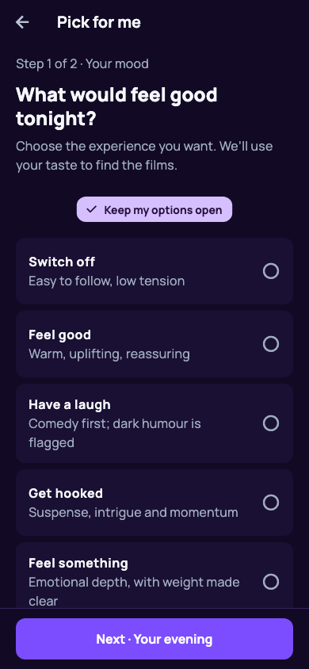
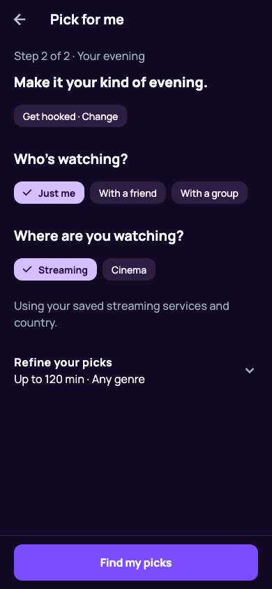
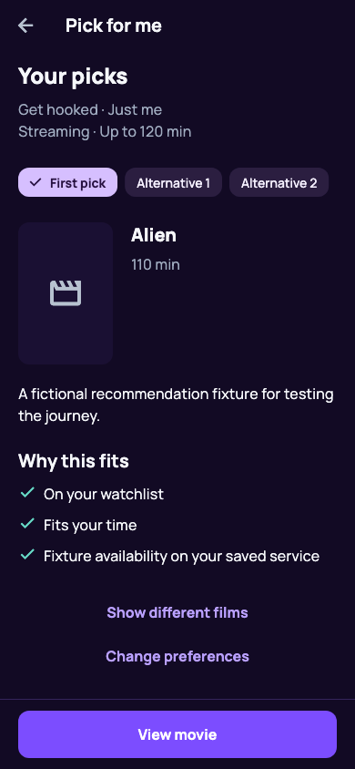

Pick for me, rebuilt
Choose a mood → set up your evening → find a film.
Actual Flutter renders using fictional test data. These are screen previews, not clickable app controls. Posters, film availability and explanations come from real data in the app.
1. Start with the experience
2. Keep the details optional
3. Choose, compare or refine
Implemented locally · 26 September 2026